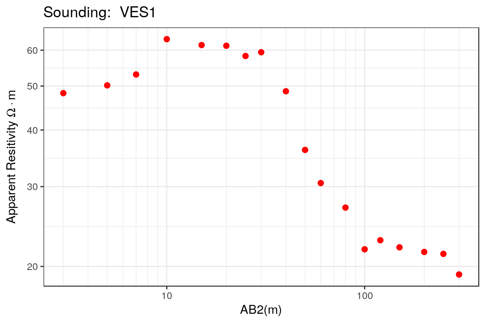

Importance of subsurface investigations. Specially for groundwater.
The Vertical Electrical Sounding (VES) is one of the oldest resistivity methods and its main advantages include:
This method is based on the measurements of the electrical apparent resistivity of the geological medium when the distance between the electrical source and the measurement nodes is increased. From this information the true resistivities and thicknesses of the geological model are estimated.
Let \(A,B\) be the current electrodes (positive and negative respectively) located on the ground surface and \(M,N\) are the sensors used to measure the potential. The apparent resistivity of an Earth material is defined as:
\[ \rho_{app,k} = k \frac{U_{MN}}{I_{AB}} \] where \(k\) is the so called geometric factor of the electrode array, \(U_{MN}\) is the voltage between the electrodes \(M\) and \(N\) and \(I_{AB}\) is the electric current applied between the measurement electrodes \(A\) and \(B\).
The geometric factor of the array is defined as: \[ k=\frac{2 \pi}{\frac{1}{r_{AM}} - \frac{1}{r_{BM}} - \frac{1}{r_{AN}} + \frac{1}{r_{BN}} } \] where \(r\) is the distance between the electrodes.
The values of the apparent resistivity \(\rho_{app,k}\) change as the electrode separation \(AB/2\) is increased.
\[ U(x)=\frac{I \rho_{1}}{2 \pi} \frac{1}{x} \left( 1 + 2x \int_{0}^{+\infty} K(\lambda) J_{0}(\lambda x)d\lambda \right) \] where \(\rho_{1}\) is the resistivity of the first layer, \(J_{0}\) is the Bessel function of order zero , and \(K(\lambda)\) is a function that depends on \(\lambda\) and the resisitivities and thicknesses of all layers and the resistivity of the substratum. The integral in the previous equation can be interpreted as potential disturbance due to the layered structure of the Earth and this must be numerically evaluated.
library(rves)data("ves_data1")ab2 <- ves_data1$ab2
apprho <- ves_data1$apprho
sev1a <- ves(id= "Sounding 1", ab2 = ab2, apprho = apprho)p1 <- plot(sev1a)
rho <- c(40,70,30, 20)
thick <- c(2,10,50,500)
sev1a$rhopar <- rho
sev1a$thickpar <- thick
sev1a$interpreted <- TRUEp2 <- plot(sev1a)res <- apparent_resistivities(rho, thick, filt=filt$V1, ab2)
print(res$appres)
#> [1] 45.03442 50.79032 55.28891 57.89512 57.49175 54.80907 50.75936
#> [8] 46.97001 41.22785 36.61319 34.31048 30.31195 28.43154 26.55114
#> [15] 25.11512 22.97268 22.21597 21.45926rerr <- 100*abs(res$appres-apprho)/res$appres
print(rerr)
#> [1] 7.095863 1.201653 4.085640 9.594723 7.111025 11.952279 14.757161
#> [8] 26.399793 18.124039 1.265088 10.960138 11.025177 23.254249 13.939657
#> [15] 12.244097 6.279988 4.032997 10.528123
print(mean(rerr))
#> [1] 10.76954par0 <- c(rho, thick)
res.nls <- calibrate_nls(sev1a, par0, iterations = 10, ireport = 5)
#> iteration, RSS, Rel Error = 0 17.92395 10.10434
#> iteration, RSS, Rel Error = 5 4.657908 4.95162
#> iteration, RSS, Rel Error = 9 3.95511 4.878283sev1a$rhopar <- res.nls$rho
sev1a$thickpar <- res.nls$thickness
sev1a$interpreted <- TRUEp1 <- plot(sev1a, main = "Nonlinear Least Squares")res.lbfgs <- calibrate(sev1a, opt.method = "L-BFGS-B", obj.fn = "rss",
par0 = par0, lower = c(rep(5,4), rep(5,4)),
upper = c(rep(100,4),rep(501,4)))sev1a$rhopar <- res.lbfgs$rho
sev1a$thickpar <- res.lbfgs$thickness
sev1a$interpreted <- TRUEp2 <- plot(sev1a, main = "L-BFGS-B")